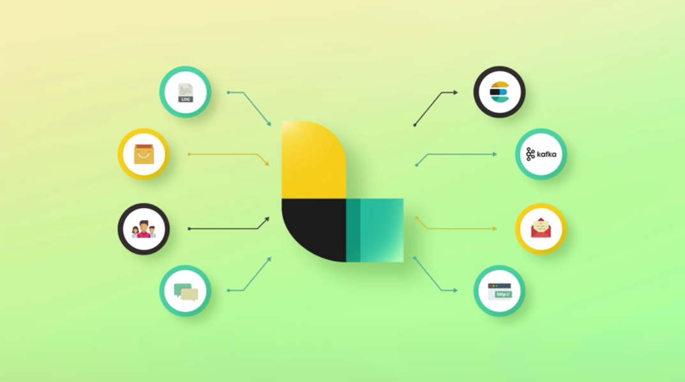

ELK is the acronym for Elasticsearch, Logstash and Kibana.
Elasticsearch/Elastic stack is a distributed, open source, search and analytics engine for all types of data, including textual, numerical, structured and unstructured. It's a RESTful application. Elasticsearch is built on Apache Lucne and it's famous for speed and scalability. It is basically a document store like MongoDB. Data is stored as "Schema-less" JSON objects (like No SQL documents). It provides near real-time search (meaning there is only a small latency from a document is indexed untill it is searchable).
curl =X {REST Verb (GET/POST)} {Node}:{Port}/{Index}/{Type}/{ID}
Its an analytics and visualization platform. Kibana can be treated as elastic search dashboard, providing line chart, pie chart and many others. Multiple dashboards can be created for different dashboards. It can be also used to search the elasticsearch logs.
Its a data processing pipeline use to send the information to elasticsearch. Logstash has evolved to support multiple applications other than elasticsearh in recent times. Data logstash receives are treated as events and these events can be sent multiple destinations like elasticsearch, email, kafka. Logstash has 3 parts. 1. Inputs, 2. Filters and 3. output olugins.
Elasticsearch is the heart of elastic stack but elastic stack so most of the time Elastic stack is refereed as Elasticsearch. Elastic stack includes other tools which is optionally used with elasticsearch. Below are those components of elastic stack:
Provides fast and scalable logging with out-of-the-box support for the common data sources(Kubernetes, Apache, EC2, MySQL, Windows, etc.). Index your data into elasticsearch and visualize it all in Kibana in minutes.
Some of the out-of-the-box features provided for logging are listed below: